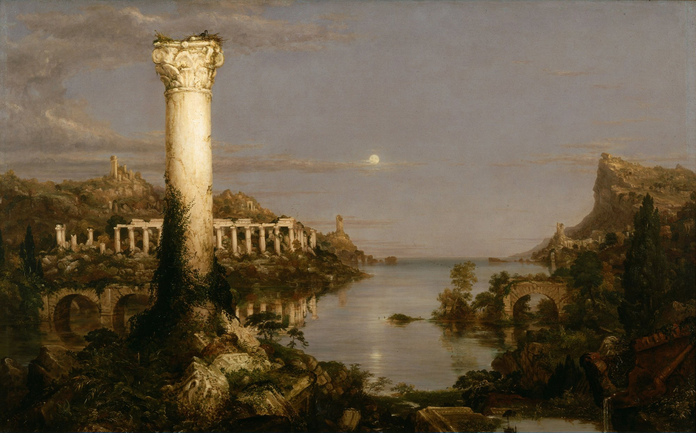
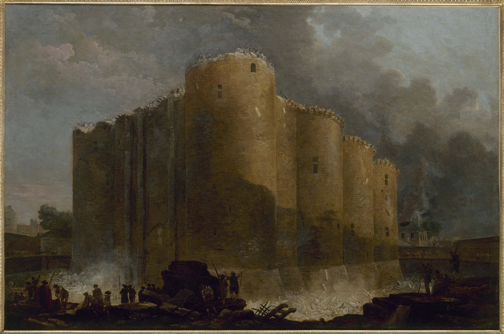

Séance 8 sur 8 · la pointe
Séance 8. L'oral de l'épreuve
ORAL Durée : 55 minutes, minutage sur 52. Première technologique, lycée général et technologique. Quand la machine s'arrête.
Question de la séance. Le roman propose-t-il une liberté ou une autre dépendance ?
Évaluation orale, sur 20, au format de l'épreuve : 30 minutes de préparation dans le vrai oral ; dans cette heure, on entraîne le passage, et chacun tient aussi le rôle de l'examinateur. Un passage complet (20 minutes) sert de démonstration. Trois présentations de la seconde partie (8 minutes chacune) suivent. Les autres passages ont lieu ensuite, ou en aide personnalisée. Les élèves non interrogés ont la grille sous les yeux et préparent une relance chacun.
Déroulement, minute à minute
| Étape | Durée | Activité |
|---|---|---|
| 1 | 4 min | Consignes, rappel du format et de la grille, tirage du premier passage. |
| 2 | 20 min | Un passage complet, au format de l'épreuve : lecture (2), explication linéaire (8), grammaire (2), présentation et entretien (8). Les autres écoutent avec la grille. |
| 3 | 24 min | Trois présentations de la seconde partie (8 minutes chacune) : 2 minutes de présentation, puis l'entretien, avec une relance préparée par un camarade. |
| 4 | 4 min | Bilan : ce qui a été réussi, ce que l'on reprend. Chacun relit la pointe de sa spirale. |



Le format de l'épreuve
Préparation : 30 minutes. Passage : 20 minutes. Coefficient 5. Selon la note de service du 11 septembre 2026 (BO spécial n° 4 du 17 septembre 2026) :
- Première partie, 12 minutes. L'examinateur propose un des trois extraits travaillés (EL 1, EL 2, EL 3) et une question de grammaire sur ce passage. L'élève situe le texte, le lit, l'explique, répond à la question de grammaire.
- Seconde partie, 8 minutes. Présentation de Ravage comme œuvre choisie, puis entretien. Ces entraînements, rappelons-le, préparent une lecture cursive que l'élève peut choisir à l'oral : les extraits eux-mêmes ne figurent pas au récapitulatif, sauf parcours construit par le professeur autour d'une œuvre du programme.
Fiche élève pour la présentation (2 minutes au plus)
- L'œuvre en une phrase (auteur, date, genre, sujet).
- Pourquoi je l'ai choisie (une raison personnelle, une raison littéraire).
- Un passage qui m'a marqué (référence précise).
- La question que le roman me pose (la pointe de ma spirale).
Relances possibles de l'examinateur
- François est-il un héros ?
- Peut-on lire ce roman sans connaître son contexte de publication ?
- Le roman est-il pour ou contre le progrès ?
- Quel personnage auriez-vous aimé entendre davantage ?
- Ce roman est-il encore actuel ?
Les élèves non interrogés préparent chacun une relance, et l'utilisent pendant l'entretien, sans interrompre, après la présentation.
Barème sur 20
| Partie | Critère | Points |
|---|---|---|
| 1 | Lecture : texte situé, lecture juste et expressive | 2 |
| 1 | Explication linéaire : projet, mouvements, analyses précises, interprétation | 8 |
| 1 | Question de grammaire : identification et analyse exactes | 2 |
| 2 | Présentation et entretien : connaissance de l'œuvre, implication personnelle, capacité à dialoguer, nuancer et défendre un point de vue | 8 |
Corrigé (attendus de l'entretien)
Attendus de l'entretien. Un bon candidat distingue le point de vue du narrateur et celui du lecteur ; connaît le contexte (1943, feuilleton dans Je suis partout, « retour à la terre ») sans réduire le roman à ce contexte ; nuance (le roman critique la technique, mais célèbre une autorité qui inquiète) ; s'appuie sur au moins deux références précises (par exemple le plastec de la partie I et les « bras » de la partie IV).
Erreurs à éviter : déclarer que Barjavel « avait tout prévu » sans exemple ; condamner l'œuvre sans l'avoir analysée ; confondre l'auteur, le narrateur et François ; répondre par un oui ou un non, sans revenir au texte.
Trace écrite. À l'oral, je présente Ravage comme une lecture cursive que j'ai choisie. Je situe, je lis, j'explique, je parle de la pointe de ma spirale, et je dialogue. Je distingue ce que le roman célèbre et ce que je peux en penser.
Point d'arrêt. Après le passage complet de démonstration (étape 2).
Sortie de secours (8 minutes). Consignes et grille, puis une seule présentation de la seconde partie (2 minutes et un court entretien), avec une relance préparée.
Après cette séance. Les élèves qui n'ont pas encore passé l'oral blanc le passent dans une heure suivante, ou en aide personnalisée, au format complet de 20 minutes. Chacun relit sa spirale et sa fiche de présentation.
Pour le professeur
Organisation. Quatre à cinq passages complets ne tiennent pas dans 52 minutes. D'où ce partage, annoncé aux élèves : un passage complet en démonstration, trois secondes parties, le reste plus tard. Les élèves examinateurs ont une tâche réelle (une relance, une grille remplie). Ramasser les grilles : elles entraînent l'écoute.
Statut. Redire, une dernière fois, que Ravage est une lecture cursive, que l'élève peut choisir pour la seconde partie de l'oral, et que les trois explications sont des entraînements. Ne pas laisser croire que ces extraits seront sur le récapitulatif, sauf construction volontaire d'un parcours autour d'une œuvre du programme (par exemple Schwarz-Bart).
Fiche de lecture. Quand le modèle de Madame Carole Paoli Pompougnac aura été reçu, il pourra servir d'appui à la présentation. En attendant, la fiche en quatre points ci-dessus suffit.